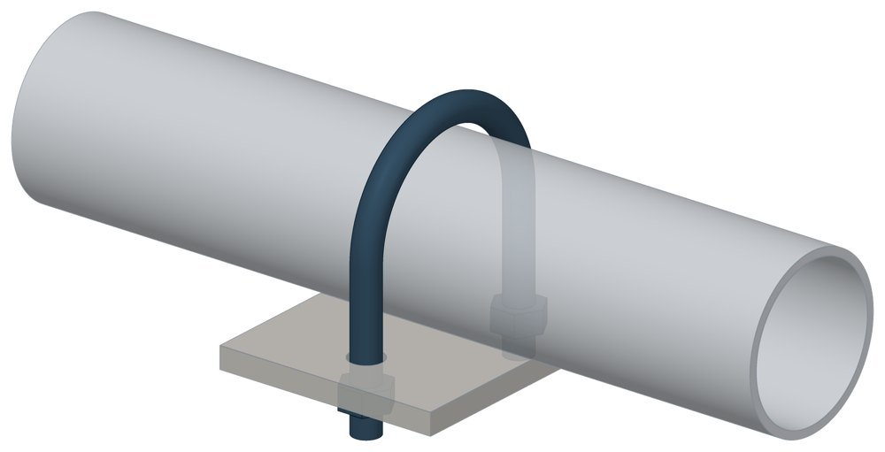

Опоры бескорпусные неподвижные ОБН
МН 4016-62, серия 4.903-10. Dн 25–530 мм, масса 0,07–6,856 кг.

- Диаметр трубы Dн
- 25–530 мм
- Документ
- МН 4016-62, серия 4.903-10
- Исполнений
- 46
- Масса
- 0,07–6,856 кг
- 3D-модели
- у всех исполнений (условные: общий вид по габаритам)
Таблица исполнений ОБН
| Обозначение | Код ПРОМБУРГ | Dнмм | l+rмм | Амм | dмм | Массакг | 3D |
|---|---|---|---|---|---|---|---|
| ОБН 25 | ПБ-ОБН-0025-1 | 25; 26,75 | 52 | 36 | М8 | 0,07 | 3D |
| ОБН Н-25 | ПБ-ОБН-0025-2 | 25; 26,75 | 52 | 36 | М8 | 0,07 | 3D |
| ОБН 32 | ПБ-ОБН-0032-1 | 32; 33,5 | 57 | 42 | М8 | 0,075 | 3D |
| ОБН Н-32 | ПБ-ОБН-0032-2 | 32; 33,5 | 57 | 42 | М8 | 0,075 | 3D |
| ОБН 38 | ПБ-ОБН-0038-1 | 38 | 64 | 48 | М8 | 0,082 | 3D |
| ОБН Н-38 | ПБ-ОБН-0038-2 | 38 | 64 | 48 | М8 | 0,082 | 3D |
| ОБН 42,25 | ПБ-ОБН-0042-1 | 42,25 | 67 | 52 | М8 | 0,086 | 3D |
| ОБН Н-42,25 | ПБ-ОБН-0042-2 | 42,25 | 67 | 52 | М8 | 0,086 | 3D |
| ОБН 45 | ПБ-ОБН-0045-1 | 44,5; 45 | 76 | 58 | М10 | 0,155 | 3D |
| ОБН Н-45 | ПБ-ОБН-0045-2 | 44,5; 45 | 76 | 58 | М10 | 0,155 | 3D |
| ОБН 48 | ПБ-ОБН-0048-1 | 48 | 80 | 62 | М10 | 0,161 | 3D |
| ОБН Н-48 | ПБ-ОБН-0048-2 | 48 | 80 | 62 | М10 | 0,161 | 3D |
| ОБН 57 | ПБ-ОБН-0057-1 | 57 | 88 | 70 | М10 | 0,222 | 3D |
| ОБН Н-57 | ПБ-ОБН-0057-2 | 57 | 88 | 70 | М10 | 0,198 | 3D |
| ОБН 60 | ПБ-ОБН-0060-1 | 60 | 92 | 74 | М10 | 0,228 | 3D |
| ОБН Н-60 | ПБ-ОБН-0060-2 | 60 | 92 | 74 | М10 | 0,204 | 3D |
| ОБН 76 | ПБ-ОБН-0076-1 | 76 | 109 | 90 | М12 | 0,391 | 3D |
| ОБН Н-76 | ПБ-ОБН-0076-2 | 76 | 109 | 90 | М12 | 0,361 | 3D |
| ОБН 89 | ПБ-ОБН-0089-1 | 89 | 127 | 106 | М12 | 0,442 | 3D |
| ОБН Н-89 | ПБ-ОБН-0089-2 | 89 | 127 | 106 | М12 | 0,407 | 3D |
| ОБН 108 | ПБ-ОБН-0108-1 | 108 | 147 | 122 | М12 | 0,584 | 3D |
| ОБН Н-108 | ПБ-ОБН-0108-2 | 108 | 147 | 122 | М12 | 0,5 | 3D |
| ОБН 114 | ПБ-ОБН-0114-1 | 114 | 152 | 128 | М12 | 0,633 | 3D |
| ОБН Н-114 | ПБ-ОБН-0114-2 | 114 | 152 | 128 | М12 | 0,53 | 3D |
| ОБН 133 | ПБ-ОБН-0133-1 | 133 | 175 | 150 | М16 | 1,013 | 3D |
| ОБН Н-133 | ПБ-ОБН-0133-2 | 133 | 175 | 150 | М16 | 0,934 | 3D |
| ОБН 152 | ПБ-ОБН-0152-1 | 152 | 195 | 170 | М16 | 1,09 | 3D |
| ОБН Н-152 | ПБ-ОБН-0152-2 | 152 | 195 | 170 | М16 | 1,013 | 3D |
| ОБН 159 | ПБ-ОБН-0159-1 | 159 | 206 | 180 | М16 | 1,198 | 3D |
| ОБН Н-159 | ПБ-ОБН-0159-2 | 159 | 206 | 180 | М16 | 1,089 | 3D |
| ОБН 194 | ПБ-ОБН-0194-1 | 194 | 238 | 214 | М20 | 1,507 | 3D |
| ОБН Н-194 | ПБ-ОБН-0194-2 | 194 | 238 | 214 | М20 | 1,308 | 3D |
| ОБН 219 | ПБ-ОБН-0219-1 | 219 | 275 | 242 | М20 | 2,468 | 3D |
| ОБН Н-219 | ПБ-ОБН-0219-2 | 219 | 275 | 242 | М20 | 2,214 | 3D |
| ОБН 273 | ПБ-ОБН-0273-1 | 273 | 331 | 298 | М20 | 2,884 | 3D |
| ОБН Н-273 | ПБ-ОБН-0273-2 | 273 | 331 | 298 | М20 | 2,601 | 3D |
| ОБН 325 | ПБ-ОБН-0325-1 | 325 | 383 | 350 | М20 | 3,064 | 3D |
| ОБН Н-325 | ПБ-ОБН-0325-2 | 325 | 383 | 350 | М20 | 2,733 | 3D |
| ОБН 377 | ПБ-ОБН-0377-1 | 377 | 435 | 402 | М20 | 3,84 | 3D |
| ОБН Н-377 | ПБ-ОБН-0377-2 | 377 | 435 | 402 | М20 | 3,408 | 3D |
| ОБН 426 | ПБ-ОБН-0426-1 | 426 | 494 | 456 | М24 | 5,709 | 3D |
| ОБН Н-426 | ПБ-ОБН-0426-2 | 426 | 494 | 456 | М24 | 5,226 | 3D |
| ОБН 480 | ПБ-ОБН-0480-1 | 480 | 546 | 508 | М24 | 6,311 | 3D |
| ОБН Н-480 | ПБ-ОБН-0480-2 | 480 | 546 | 508 | М24 | 5,768 | 3D |
| ОБН 530 | ПБ-ОБН-0530-1 | 530 | 597 | 558 | М24 | 6,856 | 3D |
| ОБН Н-530 | ПБ-ОБН-0530-2 | 530 | 597 | 558 | М24 | 6,267 | 3D |
Чтобы заказать, сообщите обозначение и код ПРОМБУРГ: +7 (499) 325-51-35, promburg@yandex.ru.
Нормативные документы
- МН 4016-62 Детали трубопроводов. Опоры бескорпусные неподвижные и направляющие стальных трубопроводов — документ, по которому изготавливается изделие
- Серия 4.903-10 Изделия и детали трубопроводов для тепловых сетей — документ, по которому изготавливается изделие — Не действует с 01.11.1990. Заменён: Серия 5.903-13. Изделие изготавливается по прежнему обозначению.
Связанные позиции
- Соседний тип: ОПН — Опоры приварные неподвижные скользящие ОПН
Собрать узел с этим изделием
- Конструктор узла: собрать участок с компенсатором под свои данные труба, длина, среда, условия — состав узла и спецификация бесплатно
На трубу Dн 25–530 мм в каталоге
Позиции каталога с исполнениями на те же наружные диаметры трубы.
Детали трубопровода
- Отвод стальной крутоизогнутый 90° общих Dн: 19
- Фланец стальной воротниковый общих Dн: 19
- Фланец стальной плоский приварной общих Dн: 19
- Заглушка стальная эллиптическая общих Dн: 15
- Переход стальной концентрический общих Dн: 13
- Отвод стальной крутоизогнутый 90°, 09Г2С общих Dн: 12
- Днище стальное эллиптическое общих Dн: 2
- Отвод нержавеющий 90° общих Dн: 1
Компенсаторы
- Компенсатор сильфонный КСО общих Dн: 15
- Компенсатор сильфонный КС общих Dн: 14
- Компенсатор сильфонный сейсмический общих Dн: 14
- Компенсатор сильфонный КСОФ общих Dн: 13
- Компенсатор сильфонный 2ОПКР общих Dн: 12
- Компенсатор сильфонный 2ОПКР (ИЯНШ) 2ОПКРИ общих Dн: 12
- Компенсатор сильфонный 2СКУ.М 2СКУМ общих Dн: 12
- Компенсатор сильфонный 2СКУ.М (ИЯНШ) 2СКУМИ общих Dн: 12
- Компенсатор сильфонный 2СКУ.ППМ (ИЯНШ) 2СКУППМИ общих Dн: 12
- Компенсатор сильфонный 2СКУ.ППУ (ИЯНШ) 2СКУППУИ общих Dн: 12
- Компенсатор сильфонный 2СКУ.ППУ/ОЦ (ИЯНШ) 2СКУППУОЦИ общих Dн: 12
- Компенсатор сильфонный КСО (ИЯНШ) КСОИ общих Dн: 12
- Компенсатор сильфонный ОПКР общих Dн: 12
- Компенсатор сильфонный ОПКР (ИЯНШ) ОПКРИ общих Dн: 12
И ещё 21 тип — в оглавлении каталога.
Другие опоры и подвески
- Подвески ПГ и ПМ для горизонтальных трубопроводов ПГ, ПМ общих Dн: 17
- Опоры приварные неподвижные скользящие ОПН общих Dн: 16
- Опора неподвижная двухупорная ТС-660 общих Dн: 15
- Опорные плиты диэлектрические ТС-632 общих Dн: 15
- Опоры неподвижные ППУ-ОЦ (ПЭ) ППУ неподвижная общих Dн: 14
- Опоры скользящие ППУ-ПЭ(ОЦ) ППУ скользящая общих Dн: 14
- Опоры подвесного типа ПГВ, ПМВ общих Dн: 14
- Опоры скользящие и неподвижные ОХН общих Dн: 13
- Блок хомутовый ОСТ 24-125-113-01 общих Dн: 13
- Полухомуты для хомутовых блоков подвесок горизонтальных трубопроводов из хромо молибден о ванадиевых сталей ОСТ 24-125-114-01 общих Dн: 13
И ещё 98 типов — в оглавлении каталога.
Другие типы раздела
Опоры технологических трубопроводов (ОПН, ОХН, ОБН, СТО 79814898)
- Опоры приварные неподвижные скользящие ОПН
- Опоры скользящие и неподвижные ОХН
- Опоры сварные скользящие неподвижные и направляющие СТО 79814898-130
- Опоры хомутовые и скользящие неподвижные и направляющие СТО 79814898-131
- Опоры скользящие и неподвижные с направляющим хомутом СТО 79814898-132
Частые вопросы
Чем неподвижная опора отличается от подвижной?
Неподвижная закрепляет трубу в одной точке и принимает усилия от температурного расширения, давления и трения. Подвижная держит вес трубы и даёт ей перемещаться при нагреве. Неподвижные делят трассу на участки компенсации, подвижные стоят между ними. Место и тип каждой опоры задаёт проект.
Какую неподвижную опору выбрать: хомутовую, упорную, щитовую?
Выбор идёт по расчётной осевой силе и по тому, на что опора опирается. Малый диаметр и небольшая сила — хомутовая ТС-659. Нужна высота под изоляцию — хомутовая с корпусом ТС-670 или бугельная ТС-671. Труба проходит сквозь стенку — щитовая ТС-666, при большой силе усиленная ТС-667. Упор в балку или траверсу — двух- и четырёхупорные ТС-660, ТС-661, при больших нагрузках усиленные ТС-663, ТС-664.
По какому диаметру подбирать — Dн или Ду?
По наружному диаметру трубы Dн: именно он стоит в таблицах серии. Ду — условный проход, округлённая величина: Ду 100 соответствует Dн 108. В заявке указывайте Dн и толщину стенки трубы.
Какую нагрузку выдерживает опора?
Допускаемая нагрузка задана в таблице для каждого исполнения — она в первой группе колонок каждой карточки. Хомутовая ТС-659 — осевая Q от 5 до 25 кН, щитовая ТС-666 — от 50 до 3300 кН, хомутовая с корпусом ТС-670 — Q до 380 кН и боковая T до 200 кН.
Кто считает нагрузку на неподвижную опору?
Нагрузку определяет проектировщик расчётом трубопровода на прочность и компенсацию: она зависит от схемы трассы, а не только от диаметра. По заданным Dн, стенке и нагрузкам Q, P, T подбирается исполнение из таблицы.
Неподвижную опору приваривают к строительной конструкции?
Упоры и щиты приваривают к трубе, а к несущей конструкции они прилегают свободно, без приварки — так разгружаются от крутящих моментов и опора, и конструкция. У хомутовой ТС-659 упоры приваривают к трубе, а хомут — к балке.